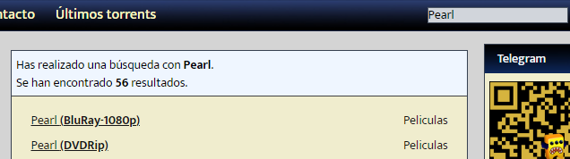

Para descargar un Torrent primero necesitamos descargar un cliente de Torrent,
el oficial y el cual recomiendo usar es Utorrent web, para ello ve a la página
oficial, selecciona descarga y sigue los pasos de instalación
Una vez tienes Utorrent solo tienes que buscar el torrent asociado
al archivo de la pelicula que quieres descargar y agregarlo a
la Utorrent para empezar a descargarla, para buscar los torrents
puesde buscar en paginas como Mejortorrent,
Ten en cuenta que depende de que version instales el archivo pesara mas o menos

Al darle a descargar el Torrent, el cual debemos arrastrar a Utorrent
Arrasatramos el Torrent a la Utorrent y nos mostrara informacion
sobre el torrent, como el numero de Seeds y Peers, cuantos mas
alla de estos mas rapida ira la descarga ya que significara que
hay mas personas compartiendo el archivo
A veces el torrent esta asociado a varios archivos ademas de la pelicula,
en ese caso los desmarcamos y nos quedamos unicamente con la pelicula,
que suele ser el archivo mas pesado y con extenciones “.avi”, “.mp4”, “.mkv”,
etc… Seleccionamos donde queremos que se instale y le damos a añadir
Una vez lo hemos añadido solo tenemos que esperar a que se complete la descarga para poder verla